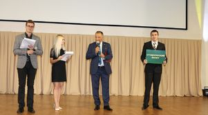

49.03.03
Спортивно-оздоровительный туризм
Подготовка специалистов по рекреативно-оздоровительной туристской деятельности.
Смоленск · Государственный вуз
Ранее — Смоленская государственная академия физической культуры, спорта и туризма. Университет готовит специалистов в области спорта, педагогики, реабилитации, туризма и работы с молодёжью.
СГУС готовит учителей физической культуры, тренеров, специалистов по адаптивной физической культуре, спортивному менеджменту, туризму и работе с молодёжью. Вуз предлагает очные и заочные форматы обучения, бюджетные и платные места.
| Год | Бюджет | Платное |
|---|---|---|
| 2024 | 57,86 | 42,30 |
| 2023 | 55,83 | 42,30 |
| 2022 | 56,61 | 51,50 |
| 2021 | 61,11 | 47,75 |
Подготовка специалистов по рекреативно-оздоровительной туристской деятельности.

Адаптивная физическая культура и исследования в области медицинской реабилитации.
Подготовка управленцев для спортивной отрасли и оздоровительных услуг.

Подготовка педагогов и тренеров для избранного вида спорта.